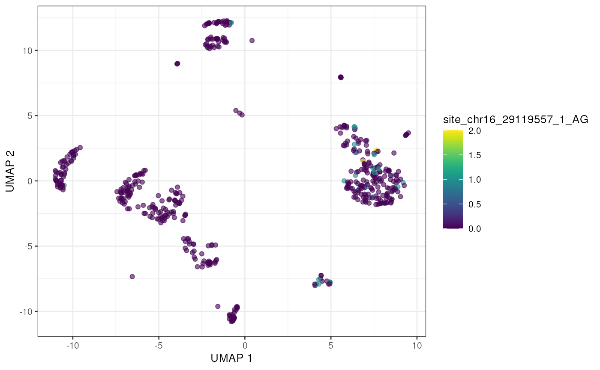
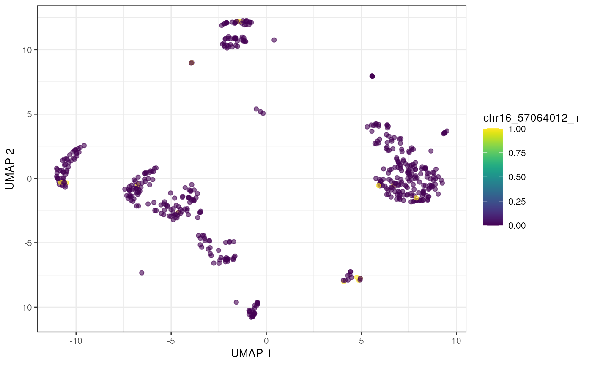

Identifying RNA editing sites in droplet single cell datasets
Kent Riemondy
University of Colorado School of Medicine2022-09-30
Source:vignettes/single-cell.Rmd
single-cell.Rmd## Loading required package: SingleCellExperiment## Loading required package: SummarizedExperiment## Loading required package: MatrixGenerics## Loading required package: matrixStats##
## Attaching package: 'MatrixGenerics'## The following objects are masked from 'package:matrixStats':
##
## colAlls, colAnyNAs, colAnys, colAvgsPerRowSet, colCollapse,
## colCounts, colCummaxs, colCummins, colCumprods, colCumsums,
## colDiffs, colIQRDiffs, colIQRs, colLogSumExps, colMadDiffs,
## colMads, colMaxs, colMeans2, colMedians, colMins,
## colOrderStats, colProds, colQuantiles, colRanges, colRanks,
## colSdDiffs, colSds, colSums2, colTabulates, colVarDiffs,
## colVars, colWeightedMads, colWeightedMeans,
## colWeightedMedians, colWeightedSds, colWeightedVars, rowAlls,
## rowAnyNAs, rowAnys, rowAvgsPerColSet, rowCollapse, rowCounts,
## rowCummaxs, rowCummins, rowCumprods, rowCumsums, rowDiffs,
## rowIQRDiffs, rowIQRs, rowLogSumExps, rowMadDiffs, rowMads,
## rowMaxs, rowMeans2, rowMedians, rowMins, rowOrderStats,
## rowProds, rowQuantiles, rowRanges, rowRanks, rowSdDiffs,
## rowSds, rowSums2, rowTabulates, rowVarDiffs, rowVars,
## rowWeightedMads, rowWeightedMeans, rowWeightedMedians,
## rowWeightedSds, rowWeightedVars## Loading required package: GenomicRanges## Loading required package: stats4## Loading required package: BiocGenerics##
## Attaching package: 'BiocGenerics'## The following objects are masked from 'package:stats':
##
## IQR, mad, sd, var, xtabs## The following objects are masked from 'package:base':
##
## anyDuplicated, aperm, append, as.data.frame, basename, cbind,
## colnames, dirname, do.call, duplicated, eval, evalq, Filter,
## Find, get, grep, grepl, intersect, is.unsorted, lapply, Map,
## mapply, match, mget, order, paste, pmax, pmax.int, pmin,
## pmin.int, Position, rank, rbind, Reduce, rownames, sapply,
## setdiff, sort, table, tapply, union, unique, unsplit,
## which.max, which.min## Loading required package: S4Vectors##
## Attaching package: 'S4Vectors'## The following objects are masked from 'package:base':
##
## expand.grid, I, unname## Loading required package: IRanges## Loading required package: GenomeInfoDb## Loading required package: Biobase## Welcome to Bioconductor
##
## Vignettes contain introductory material; view with
## 'browseVignettes()'. To cite Bioconductor, see
## 'citation("Biobase")', and for packages
## 'citation("pkgname")'.##
## Attaching package: 'Biobase'## The following object is masked from 'package:MatrixGenerics':
##
## rowMedians## The following objects are masked from 'package:matrixStats':
##
## anyMissing, rowMedians## Loading required package: scuttle## Loading required package: ggplot2
library(SingleCellExperiment)
library(GenomicFeatures)## Loading required package: AnnotationDbi
library(SummarizedExperiment)
library(rtracklayer)Characterizing RNA editing sites in single cell data
This vignette will demonstrate how to use the raer
package to examine RNA editing in droplet-based single cell RNA-seq
data.
Preprocessing
For this example analysis we will use a single cell dataset
containing mouse brain cells generated by 10x
Genomics. The single cell data was processed using the cellranger
pipeline. The BAM file contains a tag (CB) which indicates
the cell-barcode associated with each alignment, as well as a tag to
encoding information about which alignments are representative of a UMI
(xf).
To process the bam using raer we will conduct a few
preprocessing steps using command line tools (samtools).
First we will remove PCR duplicates, only keeping reads that are
representative of UMIs. As suggested by 10x genomics, we will filter to
keep reads that have a bitwise alignment flag set to
xf:i:25.
If using bamfiles generated by cellranger prior to versions
v7.0.0, then you may want to reprocess the data with
--include-introns. Intron aligned reads were not considered
as potential UMIs, so would be excluded by filtering for
xf:i:25. The default behavior for version 7.0.0 will
include introns.
After filtering for UMIs the bam will be sorted by the
CB tag. This sorting strategy will enable rapid extraction
of alignments from individual (or sets of) cell-barcodes. These steps
can be combined as follows:
samtools view -b -d "xf:25" possorted_genome_bam.bam| \
samtools sort -t CB \
> cbsorted_genome_bam.bamraer contains functionality to build a simple index that
stores the file position for each cell-barcode, enabling rapid
extraction of alignments for defined cell-barcodes. The method is based
on an approach from Jared Thompson in the bri
commandline tool. The index file will have the .bri index
file name.
idx_filename <- build_tag_index("cbsorted_genome_bam.bam", tag = "CB")Single cell editing analysis
For this vignette, we will use data from a human PBMC scRNA-seq dataset from 10x Genomics.
data_dir <- tempdir()
fns <- download_human_pbmc(data_dir)
fns## $bams
## 10k_PBMC_3p_nextgem_Chromium_X_intron_cbsorted_genome_rediportal_xf25_chr16.bam
## "/tmp/RtmpkQ4tfk/10k_PBMC_3p_nextgem_Chromium_X_intron_cbsorted_genome_rediportal_xf25_chr16.bam"
##
## $fasta
## hg38_chr16.fasta.bgz
## "/tmp/RtmpkQ4tfk/hg38_chr16.fasta.bgz"
##
## $edit_sites
## rediportal_sites.bed.gz
## "/tmp/RtmpkQ4tfk/rediportal_sites.bed.gz"
##
## $sce
## sce.rds
## "/tmp/RtmpkQ4tfk/sce.rds"
bam_fn <- fns$bams
fa_fn <- fns$fasta
bed_fn <- fns$edit_sitesWe’ll first index the bam file using
build_tag_index.
build_tag_index(bam_fn, tag = "CB", overwrite = FALSE)## [1] "/tmp/RtmpkQ4tfk/10k_PBMC_3p_nextgem_Chromium_X_intron_cbsorted_genome_rediportal_xf25_chr16.bam.bri"We can query the index to see the cell-barcodes are present in the
bam file using show_tag_index(), which will return a
data.frame containing each tag value and the number of
alignments associated with each tag.
For this vignette we will select cell-barcodes with at least x reads,
tag_df <- show_tag_index(bam_fn)
head(tag_df)## tag n
## 1 AAACCCAAGAAGCCAC-1 1
## 2 AAACCCAAGAAGGATG-1 1
## 3 AAACCCAAGACCATAA-1 2
## 4 AAACCCAAGACGTCGA-1 1
## 5 AAACCCAAGATACGAT-1 2
## 6 AAACCCAAGATGTAGT-1 1Next we’ll load in a SingleCellExperiment with cell-type
annotations.

Next we’ll select editing sites to query. For this analysis we will
use sites from the Rediportal database. To minimize processing time we
will first identify sites with read coverage.
filter_by_coverage() will examine read coverage across all
alignments to avoid examining and storing information about sites with
no or minimal coverage.
When analyzing single cell data we have the option to quantify editing sites for each cell or we can quantify sites by pooling alignments across similar cells, such as cells in the same cluster.
raer provides a wrapper function,
sc_editing(), which will extract alignments per cell (or
cluster) using get_tag_bam(), generate editing site counts
(get_pileup()), then collect the site counts into a
SummarizedExperiment (create_se()).
The cell_barcodes argument specifies which cell-barcodes
will be queried. If a character vector of cell-barcodes is supplied,
editing sites will be quantified per cell-barcode. Alternatively a list
containing cell-barcodes per cluster or group can be supplied, in which
case editing sites will be quantified by pooling alignments per
group.
Arguments for get_pileup() can be passed to
sc_editing(). Additionally, the editing site counts can be
stored as sparseMatrices to reduce memory usage by setting
sparse = TRUE. Lastly, processing time can be reduced by
operating in parallel across groups of cells (or clusters), by supplying
a BiocParallel backend to the BPPARAM argument
(e.g. MultiCoreParam()).
cbs <- colnames(sce)
se <- sc_editing(bamfile = bam_fn,
fafile = fa_fn,
bedfile = bed_fn,
cell_barcodes = cbs,
assay_cols = c("nA", "nG"),
filterParam = FilterParam(min_base_quality = 30L,
library_type = "fr-second-strand",
min_nucleotide_depth = 1L,
trim_5p = 5L,
trim_3p = 5L))## beginning pileup## working on: batch 1 (cells 1-50)## working on: batch 2 (cells 51-100)## working on: batch 3 (cells 101-150)## working on: batch 4 (cells 151-200)## working on: batch 5 (cells 201-250)## working on: batch 6 (cells 251-300)## working on: batch 7 (cells 301-350)## working on: batch 8 (cells 351-400)## working on: batch 9 (cells 401-450)## working on: batch 10 (cells 451-500)## pileup completing, binding summarizedExperiments
se## class: RangedSummarizedExperiment
## dim: 58802 500
## metadata(0):
## assays(2): nA nG
## rownames(58802): chr16_83477_1 chr16_83486_1 ... chr16_90172755_1
## chr16_90172757_1
## rowData names(1): Ref
## colnames(500): TGTTTGTCAGTTAGGG-1 ATCTCTACAAGCTACT-1 ...
## GGGCGTTTCAGGACGA-1 CTATAGGAGATTGTGA-1
## colData names(1): sampleNext we’ll filter the pileups to find sites with at least 5 cells
with an editing event, and add the editing information to the
SingleCellExperiment as an altExp().
se <- se[Matrix::rowSums(assay(se, "nA") + assay(se, "nG")) != 0, ]
se <- calc_edit_frequency(se, edit_from = "A", edit_to = "G", replace_na = FALSE)
se <- se[, colnames(sce)]
small_se <- se[rowSums(assay(se, "nG") > 0) >= 5, ]
altExp(sce, "edits") <- small_seWith the editing sites added to the SingleCellExperiment we can use plotting and other methods previously developed for single cell analysis. Here we’ll visualize editing sites with the highest edited read counts.
to_plot <- rownames(altExp(sce))[order(rowSums(assay(altExp(sce), "nG")) , decreasing = TRUE)]
lapply(to_plot[1:10], function(x){
plotUMAP(sce, colour_by = x, by_exprs_values = "nG")
})## [[1]]
##
## [[2]]
##
## [[3]]
##
## [[4]]
##
## [[5]]
##
## [[6]]##
## [[7]]
##
## [[8]]
##
## [[9]]##
## [[10]]
altExp(sce)$cell_type <- sce$celltype
plotGroupedHeatmap(altExp(sce),
features = to_plot[1:25],
group = "cell_type",
exprs_values = "nG")
Various tools in Bioconductor can be used to provide additional
annotation information about each RNA editing site. The
VariantAnnotation package provides powerful functionality
to annotate the location of each editing site, and provide information
about alterations in codons or splice site.
Session info
## R version 4.2.1 (2022-06-23)
## Platform: x86_64-pc-linux-gnu (64-bit)
## Running under: Ubuntu 20.04.5 LTS
##
## Matrix products: default
## BLAS: /usr/lib/x86_64-linux-gnu/openblas-pthread/libblas.so.3
## LAPACK: /usr/lib/x86_64-linux-gnu/openblas-pthread/liblapack.so.3
##
## locale:
## [1] LC_CTYPE=en_US.UTF-8 LC_NUMERIC=C
## [3] LC_TIME=en_US.UTF-8 LC_COLLATE=en_US.UTF-8
## [5] LC_MONETARY=en_US.UTF-8 LC_MESSAGES=en_US.UTF-8
## [7] LC_PAPER=en_US.UTF-8 LC_NAME=C
## [9] LC_ADDRESS=C LC_TELEPHONE=C
## [11] LC_MEASUREMENT=en_US.UTF-8 LC_IDENTIFICATION=C
##
## attached base packages:
## [1] stats4 stats graphics grDevices utils datasets methods
## [8] base
##
## other attached packages:
## [1] rtracklayer_1.57.0 GenomicFeatures_1.49.7
## [3] AnnotationDbi_1.59.1 scater_1.25.7
## [5] ggplot2_3.3.6 scuttle_1.7.4
## [7] SingleCellExperiment_1.19.0 SummarizedExperiment_1.27.3
## [9] Biobase_2.57.1 GenomicRanges_1.49.1
## [11] GenomeInfoDb_1.33.7 IRanges_2.31.2
## [13] S4Vectors_0.35.4 BiocGenerics_0.43.4
## [15] MatrixGenerics_1.9.1 matrixStats_0.62.0
## [17] raer_0.99.0 BiocStyle_2.25.0
##
## loaded via a namespace (and not attached):
## [1] ggbeeswarm_0.6.0 colorspace_2.0-3
## [3] rjson_0.2.21 ellipsis_0.3.2
## [5] rprojroot_2.0.3 XVector_0.37.1
## [7] BiocNeighbors_1.15.1 fs_1.5.2
## [9] farver_2.1.1 ggrepel_0.9.1
## [11] bit64_4.0.5 fansi_1.0.3
## [13] xml2_1.3.3 codetools_0.2-18
## [15] R.methodsS3_1.8.2 sparseMatrixStats_1.9.0
## [17] cachem_1.0.6 knitr_1.40
## [19] jsonlite_1.8.0 Rsamtools_2.13.4
## [21] dbplyr_2.2.1 png_0.1-7
## [23] R.oo_1.25.0 pheatmap_1.0.12
## [25] BiocManager_1.30.18 compiler_4.2.1
## [27] httr_1.4.4 assertthat_0.2.1
## [29] Matrix_1.5-1 fastmap_1.1.0
## [31] cli_3.4.1 BiocSingular_1.13.1
## [33] htmltools_0.5.3 prettyunits_1.1.1
## [35] tools_4.2.1 rsvd_1.0.5
## [37] gtable_0.3.1 glue_1.6.2
## [39] GenomeInfoDbData_1.2.9 dplyr_1.0.10
## [41] rappdirs_0.3.3 Rcpp_1.0.9
## [43] jquerylib_0.1.4 pkgdown_2.0.6
## [45] vctrs_0.4.2 Biostrings_2.65.6
## [47] DelayedMatrixStats_1.19.1 xfun_0.33
## [49] stringr_1.4.1 beachmat_2.13.4
## [51] irlba_2.3.5 lifecycle_1.0.2
## [53] restfulr_0.0.15 XML_3.99-0.10
## [55] zlibbioc_1.43.0 scales_1.2.1
## [57] BSgenome_1.65.2 ragg_1.2.3
## [59] hms_1.1.2 parallel_4.2.1
## [61] RColorBrewer_1.1-3 yaml_2.3.5
## [63] curl_4.3.2 gridExtra_2.3
## [65] memoise_2.0.1 sass_0.4.2
## [67] biomaRt_2.53.2 stringi_1.7.8
## [69] RSQLite_2.2.17 highr_0.9
## [71] BiocIO_1.7.1 desc_1.4.2
## [73] ScaledMatrix_1.5.1 filelock_1.0.2
## [75] BiocParallel_1.31.12 rlang_1.0.6
## [77] pkgconfig_2.0.3 systemfonts_1.0.4
## [79] bitops_1.0-7 evaluate_0.16
## [81] lattice_0.20-45 purrr_0.3.4
## [83] labeling_0.4.2 GenomicAlignments_1.33.1
## [85] bit_4.0.4 tidyselect_1.1.2
## [87] magrittr_2.0.3 bookdown_0.29
## [89] R6_2.5.1 generics_0.1.3
## [91] DelayedArray_0.23.2 DBI_1.1.3
## [93] pillar_1.8.1 withr_2.5.0
## [95] KEGGREST_1.37.3 RCurl_1.98-1.8
## [97] tibble_3.1.8 crayon_1.5.2
## [99] utf8_1.2.2 BiocFileCache_2.5.0
## [101] rmarkdown_2.16 viridis_0.6.2
## [103] progress_1.2.2 grid_4.2.1
## [105] data.table_1.14.2 blob_1.2.3
## [107] digest_0.6.29 R.utils_2.12.0
## [109] textshaping_0.3.6 munsell_0.5.0
## [111] viridisLite_0.4.1 beeswarm_0.4.0
## [113] vipor_0.4.5 bslib_0.4.0